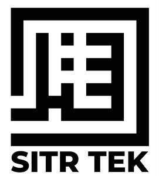

Trade Mark Journal No.2026/007 13 February 2026
UK00004330979 27 January 2026 (25,35)

- Class 25
- Clothing for men, women and children; Underwear for women; Ladies wear; Swim wear for gentlemen and ladies; Underclothing for women; Sports wear; Bathing costumes for women; Bathing suits for men; Clothes for sports; Jackets being sports clothing; Clothing for sports; Sports clothing; Clothing for leisure wear; Swim wear for children; Outerclothing for men; Sports bras; Sports headgear [other than helmets]; Clothing for children; Moisture-wicking sports bras; Headgear for wear; Athletic uniforms; Casual wear; Veils [clothing]; Garments for protecting clothing; Trousers for children; Sports caps and hats; Women's clothing; Religious garments; Headshawls; Sweatjackets; Khimars; Children's outerclothing; Weather resistant outer clothing; Moisture-wicking sports pants; Sports pants; Athletic clothing; Sports clothing [other than golf gloves]; Jogging bottoms [clothing]; Sports garments; Water-resistant clothing; Outer clothing; Thermal clothing; Clothes for sport; Waterproof clothing; Men's and women's jackets, coats, trousers, vests; Moisture-wicking sports shirts; Clothing for wear in wrestling games; Weatherproof clothing; Sweat-absorbent socks; Cleats for attachment to sports shoes; Anti-sweat underwear; Sports vests; Parts of clothing, footwear and headgear; Waterproof outerclothing; Jogging pants; Sweat-absorbent underwear; Gussets for footlets [parts of clothing]; Linings (Ready-made -) [parts of clothing]; Ready-made linings [parts of clothing]; Fabric belts [clothing]; Gussets for underwear [parts of clothing]; Gussets [parts of clothing]; Gussets for tights [parts of clothing]; Gussets for leotards [parts of clothing]; Gussets for stockings [parts of clothing]; Gussets for bathing suits [parts of clothing]; Pockets for clothing; Bra straps [parts of clothing]; Underarm gussets [parts of clothing]; Clothing; Ready-made clothing; Jackets [clothing].
- Class 35
- Online retail store services in relation to clothing; Online retail store services relating to clothing; Retail services connected with the sale of clothing and clothing accessories; Online retail services relating to clothing; Retail services in relation to clothing accessories; Retail services in relation to clothing; Retail services relating to clothing; Retail store services in the field of clothing; Retail services in relation to fashion accessories; Mail order retail services connected with clothing accessories; Online retail services relating to handbags; Online retail services in relation to downloadable virtual clothing; Retail services in relation to downloadable virtual clothing; Mail order retail services for clothing accessories; Retail services in relation to footwear; Retail services in relation to bicycle accessories; Wholesale services in relation to clothing; Online retail services for downloadable virtual clothing; Mail order retail services for clothing; Wholesale services relating to clothing; Retail services in relation to fabrics; Presentation of goods on communications media, for retail purposes; Presentation of goods on communication media, for retail purposes; Communication media (Presentation of goods on -), for retail purposes; Retail purposes (Presentation of goods on communication media, for -); Presentation of financial products on communication media, for retail purposes; Advertising, promotional and marketing services; Advertising, marketing and promotional services; Marketing, advertising, and promotional services; Distribution of advertising, marketing and promotional material; Advertising, marketing and promotion services; Marketing, advertising and promotion services; On-line advertising and marketing services; Advertising and marketing services; Advertising and promotional services; Promotional and advertising services; Promotional advertising services; Copywriting for advertising and promotional purposes; Customer loyalty services for commercial, promotional and/or advertising purposes; Advertising, promotional and public relations services; Customer club services, for commercial, promotional and/or advertising purposes; Advertising and marketing services provided by means of social media; Advertising and marketing services provided via communications channels; Dissemination of advertising, marketing and publicity materials; Consultancy services relating to advertising, publicity and marketing; Sales promotion using audiovisual media; Research services relating to advertising and marketing; Advertising services for the promotion of e-commerce; Promotional marketing; Dissemination of advertising and promotional materials; Organisation of customer loyalty programs for commercial, promotional or advertising purposes; Advertising and marketing; Modeling services for advertising or sales promotion; Advertising, marketing and promotional consultancy, advisory and assistance services; Advertising particularly services for the promotion of goods; Demonstration of goods for advertising purposes; Advertising and promotion services; Rental of advertising time on communication media; Distribution of products for advertising purposes; Advertising services for the promotion of beverages; Rental of all publicity and marketing presentation materials; Digital advertising services; Consumer profiling for commercial or marketing purposes; Provision of advertising space on electronic media; Promotion [advertising] of business; Advertising and publicity services; Marketing services; Brand creation services (advertising and promotion); Distribution of advertising materials; Consultancy regarding advertising communications strategy; Consultancy relating to advertising and promotion services; Advertising and marketing services provided by means of blogging; Advertising and advertisement services; Provision of space on websites for advertising goods and services; Online advertising services; Modelling for advertising or sales promotion; Publicity and promotional services; Modelling agency services for sales promotion purposes; Direct marketing services; Graphic advertising services; Advertising services; Layout services for advertising purposes; Business marketing services; Web indexing for commercial or advertising purposes; Modelling agency services for advertising purposes; Advertising services relating to the sale of goods; Distribution of advertising material; Exhibitions for commercial or advertising purposes; Promotional advertising relating to philosophical training; Preparation and presentation of audio visual displays for advertising purposes; Organisation of events for commercial and advertising purposes; Trade promotional services; Organisation of exhibitions for commercial and advertising purposes; Organisation of exhibitions for commercial or advertising purposes; Planning services for advertising; Demonstration of goods for promotional purposes; Advertising services provided by a radio and television advertising agency; Distribution of prospectuses for advertising purposes; Providing business marketing information; Street dissemination of advertising materials; Promotional services; Distribution of flyers, brochures, printed matter and samples for advertising purposes; Business advertising services relating to franchising; Organization of trade fairs for commercial or advertising purposes; Trade fairs (Organization of -) for commercial or advertising purposes; Production of video recordings for marketing purposes; Video recordings for marketing purposes (Production of -); Provision of space on web-sites for advertising goods and services; Planning and conducting of trade fairs, exhibitions and presentations for commercial or advertising purposes; Organisation of trade fairs for commercial or advertising purposes; Promotional advertising for exploration projects; Dissemination of advertising materials; Organisation of promotions using audio-visual media; Advertising by transmission of on-line publicity for third parties through electronic communications networks; Online marketing; Video recordings for advertising purposes (Production of -); Production of video recordings for advertising purposes; Direct mail advertising services; Providing user reviews for commercial or advertising purposes; Scriptwriting for advertising purposes; Distribution of advertising mail and of advertising supplements attached to regular editions.
Haleema FAROOQ